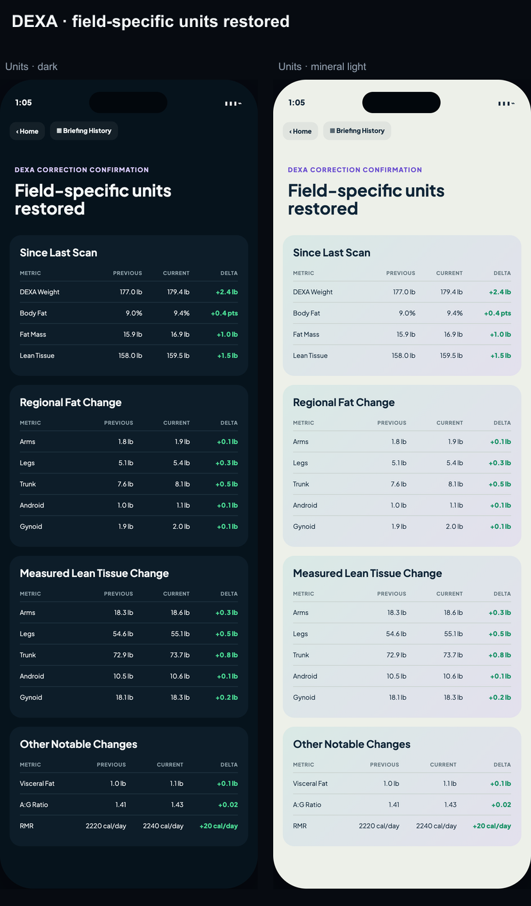
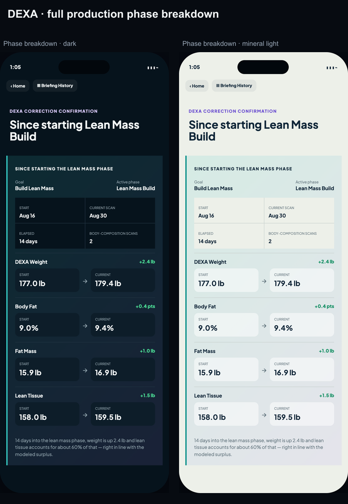
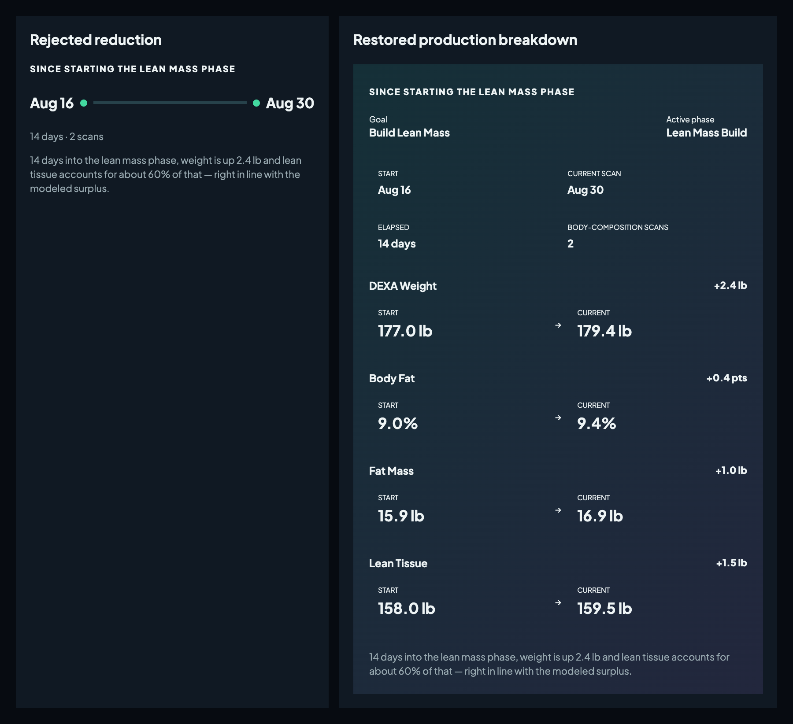
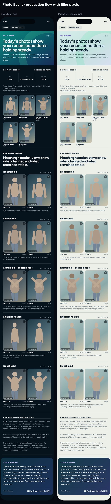
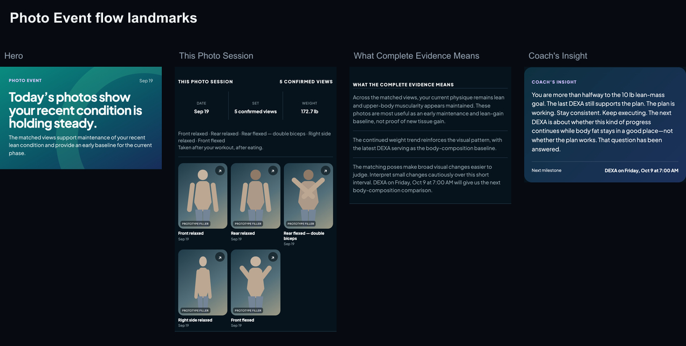
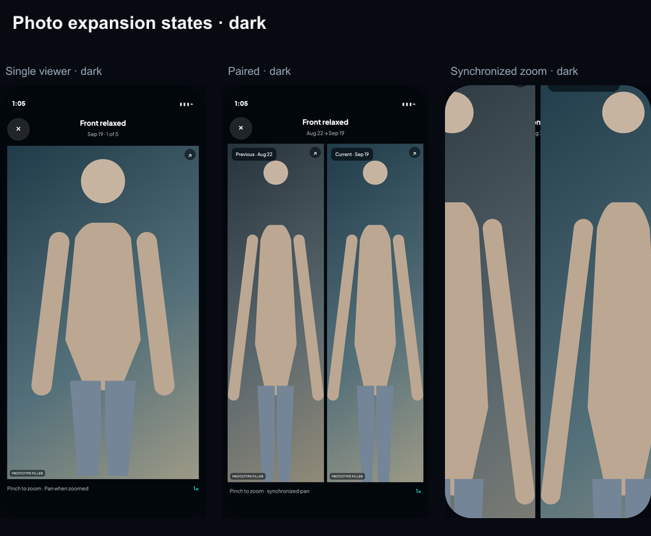
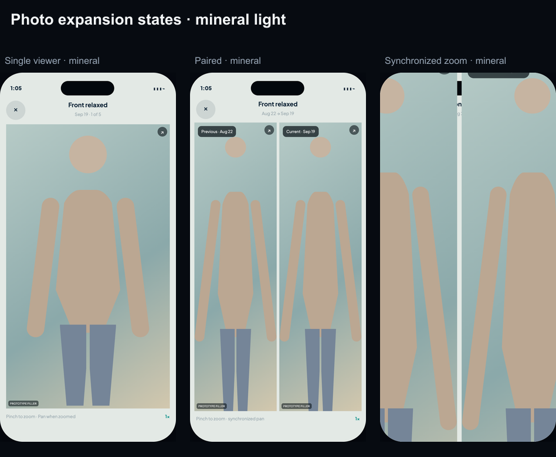

DEXA + Photo Event confirmation
Accepted styling is unchanged. DEXA units and the full Goal/Phase body-composition breakdown are restored. Photo uses canonical production structure/copy with prototype filler pixels only.
DEXA corrections



Exact Photo Event flow


Expansion states

